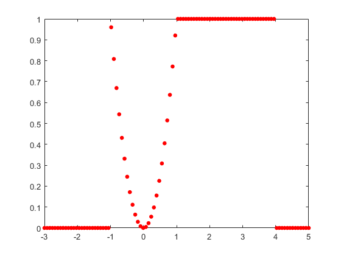
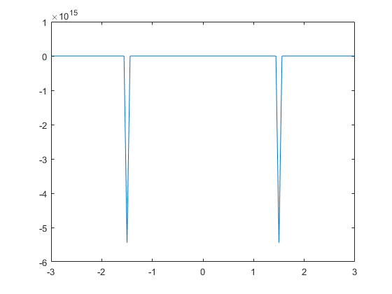
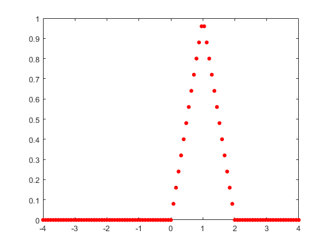

Contents
Copyright
close all; format compact; clc;
fprintf("Engineer: Rodrigo Becerril Ferreyra\n");
fprintf("Company: California State University, Long Beach\n");
fprintf("Project Name: Task 3\n");
fprintf("Date: 18 September 2020\n");
Engineer: Rodrigo Becerril Ferreyra
Company: California State University, Long Beach
Project Name: Task 3
Date: 18 September 2020
Task 3.1
fprintf("\nTask 3.1\n");
clear variables;
i = 1:100;
f = 1./(i.^2);
result = sum(f);
fprintf("\\sum_{i=1}^{100} \\frac1{i^2} = %f\n", result);
Task 3.1
\sum_{i=1}^{100} \frac1{i^2} = 1.634984
Task 3.2
fprintf("\nTask 3.2\n");
clear variables;
i = 1 : 2 : 100;
f = 1./(i.^2);
result = sum(f);
fprintf("\\sum_{i=1}^{100} \\frac1{i^2}, i mod 2 == 1 is %f\n", result);
Task 3.2
\sum_{i=1}^{100} \frac1{i^2}, i mod 2 == 1 is 1.228701
Task 3.3
fprintf("\nTask 3.3\n");
clear variables;
I = zeros(1, 20);
for N = 1:20
total = 0;
for i = 1:N
top = sin(i * pi * 0.5);
bot = i^2 + 1;
total = total + top/bot;
end
I(N) = total;
end
Task 3.3
Task 3.4
fprintf("\nTask 3.4\n");
clear variables;
x = 0 : pi/4 : pi;
f = x.^2 + 1;
disp([x ; f]);
Task 3.4
0 0.7854 1.5708 2.3562 3.1416
1.0000 1.6169 3.4674 6.5517 10.8696
Task 3.5
fprintf("\nTask 3.5\n");
clear variables;
N = 10;
x = [0, 1/4, 1/2, 3/4];
approxCosX = zeros(1, 4);
for index = 1:4
total = 0;
for n = 0:N
top = x(index)^(2 * n);
bot = factorial(2 * n);
multiplier = (-1)^(n);
total = total + (multiplier * top / bot);
end
approxCosX(index) = total;
end
fprintf("1st row: x vals. 2nd row: cos(x). 3rd row: Taylor series to 10 terms.\n")
format long;
disp([x;cos(x);approxCosX]);
format; format compact;
Task 3.5
1st row: x vals. 2nd row: cos(x). 3rd row: Taylor series to 10 terms.
Columns 1 through 3
0 0.250000000000000 0.500000000000000
1.000000000000000 0.968912421710645 0.877582561890373
1.000000000000000 0.968912421710645 0.877582561890373
Column 4
0.750000000000000
0.731688868873821
0.731688868873821
Task 3.6
fprintf("\nTask 3.6\n");
clear variables;
S = zeros(1, 1000);
len = length(S);
for N = 1:len
n = 1:N;
f = 1./(n.^2);
S(N) = sum(f);
end
c = pi^2/S(end);
fprintf("Last value of S: S(%d) = %f\nc = %f\n", len, S(end), c);
Task 3.6
Last value of S: S(1000) = 1.643935
c = 6.003648
Task 3.7
fprintf("\nTask 3.7\n");
clear variables;
vals = [1, 2, 3, 4];
answers = zeros(1, 4);
for p = vals
total = 0;
for j = 1:(p + 1)
total = total + j^p;
end
answers(p) = total;
end
answers
Task 3.7
answers =
3 14 100 979
Task 3.8
fprintf("\nTask 3.8\n");
clear variables;
N = 1000;
total = 0;
for n = 1:N
multiplier = (-1)^n;
total = total + (multiplier/n);
end
fprintf("Relative error of approximating -ln(2) (N = %d): %f\n", N, abs(log(0.5) - total) / log(2));
N = 1000;
total = 0;
for n = 1:N
bot = n * (n + 1);
total = total + 1/bot;
end
fprintf("Relative error of approximating 2 (N = %d): %f\n", N, abs(2 - total) / 2);
Task 3.8
Relative error of approximating -ln(2) (N = 1000): 0.000721
Relative error of approximating 2 (N = 1000): 0.500500
Task 3.9
fprintf("\nTask 3.9\n");
clear variables;
x = -10:10;
disp([x;x > 2 & x < 4]);
disp([x;x > 3 | x < -1]);
Task 3.9
Columns 1 through 13
-10 -9 -8 -7 -6 -5 -4 -3 -2 -1 0 1 2
0 0 0 0 0 0 0 0 0 0 0 0 0
Columns 14 through 21
3 4 5 6 7 8 9 10
1 0 0 0 0 0 0 0
Columns 1 through 13
-10 -9 -8 -7 -6 -5 -4 -3 -2 -1 0 1 2
1 1 1 1 1 1 1 1 1 0 0 0 0
Columns 14 through 21
3 4 5 6 7 8 9 10
0 1 1 1 1 1 1 1
Task 3.10
fprintf("\nTask 3.10\n");
clear variables;
x = 0:100;
disp([x;x>20 & mod(x, 2) == 0]);
Task 3.10
Columns 1 through 13
0 1 2 3 4 5 6 7 8 9 10 11 12
0 0 0 0 0 0 0 0 0 0 0 0 0
Columns 14 through 26
13 14 15 16 17 18 19 20 21 22 23 24 25
0 0 0 0 0 0 0 0 0 1 0 1 0
Columns 27 through 39
26 27 28 29 30 31 32 33 34 35 36 37 38
1 0 1 0 1 0 1 0 1 0 1 0 1
Columns 40 through 52
39 40 41 42 43 44 45 46 47 48 49 50 51
0 1 0 1 0 1 0 1 0 1 0 1 0
Columns 53 through 65
52 53 54 55 56 57 58 59 60 61 62 63 64
1 0 1 0 1 0 1 0 1 0 1 0 1
Columns 66 through 78
65 66 67 68 69 70 71 72 73 74 75 76 77
0 1 0 1 0 1 0 1 0 1 0 1 0
Columns 79 through 91
78 79 80 81 82 83 84 85 86 87 88 89 90
1 0 1 0 1 0 1 0 1 0 1 0 1
Columns 92 through 101
91 92 93 94 95 96 97 98 99 100
0 1 0 1 0 1 0 1 0 1
Task 3.11
fprintf("\nTask 3.11\n");
clear variables;
x = 1;
if(tan(73*pi*x/4) >= 0)
x = 2;
else
x = pi;
end
if(floor(x) == x)
x = 10;
else
x = 7;
end
if(isprime(x))
x = "True";
else
x = "False";
end
fprintf("%s\n", x);
Task 3.11
False
Task 3.12
fprintf("\nTask 3.12\n");
clear variables;
Task 3.12
Task 3.13
fprintf("\nTask 3.13\n");
clear variables;
integers = 1:50;
f = @(n) n.^3 - n.^2 + 40;
for n = integers
if (mod(n, 3) ~= 0) && (f(n) > 1000)
fprintf("%d ", n);
end
end
fprintf("\n");
for n = integers
if (sum(divisors(n)) - n) == n
fprintf("%d ", n);
end
end
fprintf("\n");
Task 3.13
11 13 14 16 17 19 20 22 23 25 26 28 29 31 32 34 35 37 38 40 41 43 44 46 47 49 50
6 28
Task 3.14
fprintf("\nTask 3.14\n");
clear variables;
alphabet = ['a', 'b', 'c', 'd', 'e', 'f', 'g', 'h', 'i', 'j'];
while(1)
user_input = 10;
if user_input <= 10 && user_input >= 1 && floor(user_input) == user_input
break;
end
fprintf("That is not a valid integer. Please try again.\n")
end
disp(alphabet(1:user_input));
Task 3.14
abcdefghij
Task 3.15
fprintf("\nTask 3.15\n");
clear variables;
Task 3.15
Task 3.16
fprintf("\nTask 3.16\n");
clear variables;
x = linspace(-3, 5, 100);
f = zeros(1, 100);
for i = 1:100
if x(i) < -1
f(i) = 0;
elseif x(i) <= 1
f(i) = x(i)^2;
elseif x(i) < 4
f(i) = 1;
else
f(i) = 0;
end
end
figure(); plot(x, f, 'r.', 'MarkerSize',15);
Task 3.16

Task 3.17
fprintf("\nTask 3.17\n");
clear variables;
x = linspace(-3, 3, 101);
g = cos(pi.*x);
f(g==0) = NaN;
f(g~=0) = 1./g(g~=0);
figure(); plot(x, f);
Task 3.17

Task 3.18
fprintf("\nTask 3.18\n");
clear variables;
x = linspace(-4, 4, 101);
for i = 1:101
if x(i) < 0
f(i) = 0;
elseif x(i) <= 1
f(i) = x(i);
elseif x(i) <= 2
f(i) = 2 - x(i);
else
f(i) = 0;
end
end
figure(); plot(x, f, 'r.', 'MarkerSize',15);
Task 3.18
